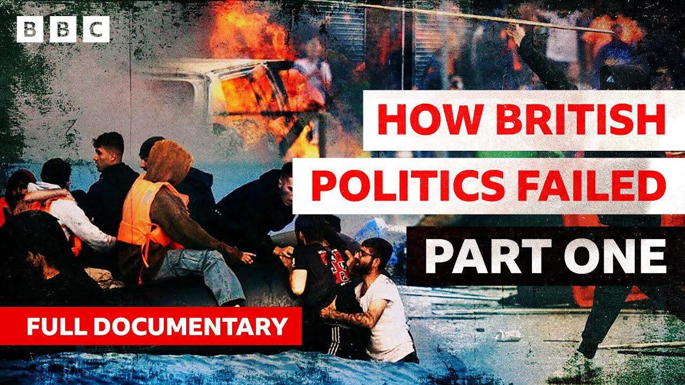

【BBC深度分析：失败的英国移民政策｜20250701】
Summary: The paragraph discusses the complex and often contentious issue of immigration in British politics, highlighting public confusion, media sensationalism, economic impacts, and policy failures.
摘要： 这段文字讨论了英国政治中复杂且常有争议的移民问题，强调了公众的困惑、媒体的煽动、经济影响以及政策失败。

⏱️ Estimated Reading Time: 76 min
📚 六级生词 📚 雅思生词 📚 托福生词 📚 专八生词 📚 SAT生词 📚 考研生词 📚 GRE生词 📚 高考生词
If I could link in the minds of the British people, immigration with membership of the European Union, then everything would change.
如果能让英国民众将移民问题与欧盟成员国身份联系起来，一切就会改变。
We haven't got enough houses now as it is.
我们现在已经没有足够的住房了。
So where you going to cut them?
那么你打算从哪里削减呢？
Just remember how many immigrants like my family, like a lot of the people in this audience's family have built this nation.
请记住，有多少像我家庭一样的移民，像在场许多观众的家庭一样，建设了这个国家。
The problem has been that immigrants, asylum seekers have all been confused in the popular mind.
问题在于，移民和寻求庇护者在公众心目中一直被混淆。
Anti-immigration groups were behind disturbances in several English towns and cities last night.
昨晚，反移民团体在英格兰多个城镇引发了骚乱。
One of the protesters told me the country was full and foreigners were a problem.
一名抗议者告诉我，这个国家已经满了，外国人是个问题。
The idea that we had some sort of open door immigration policy is just absolute nonsense.
认为我们有某种开放门户的移民政策的想法完全是胡说八道。
We wanted to see strict limits at a scale that was not going to disturb the nature of our very historic and peaceful country.
我们希望看到严格的限制，规模不会扰乱我们这个历史悠久且和平的国家的本质。
What I saw was the tabloid press becoming unhinged about this issue.
我看到的是小报媒体在这个问题上变得失控。
British jobs for British workers.
英国的工作留给英国工人。
Net immigration in the tens of thousands.
净移民数以万计。
My promise to you to stop the boats.
我向你们承诺阻止偷渡船只。
There is a pervasive view that more immigration is better for the country.
有一种普遍观点认为更多的移民对国家更好。
It was too high.
它太高了。
It wasn't being controlled.
它没有得到控制。
It needed to be controlled.
它需要被控制。
The fact is we're not in control of it.
事实是我们无法控制它。
Uh and to say otherwise is misleading the public.
呃，说其他的是在误导公众。
Our ambition for ourselves is matched by our sense of compassion and decency and duty towards other people.
我们对自己的抱负与我们对他人同情、正直和责任感的意识相匹配。
Simple values but the right ones.
简单的价值观，但是正确的。
The problems caused by the recession have left building contractors with a severe skills shortage.
经济衰退带来的问题使建筑承包商面临严重的技能短缺。
It's already biting and it's likely to get worse.
它已经开始产生影响，而且可能会变得更糟。
British businesses are finding it increasingly difficult to hire skilled computer specialists.
英国企业发现越来越难雇佣熟练的计算机专家。
The government's concerned about shortages of skilled workers as unemployment falls.
政府担心随着失业率下降，熟练工人的短缺。
Back in 97, because I had employment as well as education, I was interested in what was happening with the labor market.
回到97年，因为我既有就业也有教育背景，我对劳动力市场的情况感兴趣。
And my input to that was to say yes there's a intermediate period in which we will need to accept quite large scale legal migration.
我的意见是，是的，有一个中间阶段，我们需要接受相当大规模的合法移民。
Britain has a serious shortage of skilled workers.
英国严重缺乏熟练工人。
So much so that the government says it's in danger of holding back the economy.
以至于政府表示这可能会阻碍经济发展。
Could one solution be to relax immigration rules?
一个解决方案可能是放宽移民规则吗？
Because our economy was strong and we were bringing a lot of people in to work in sectors where we needed that workforce.
因为我们的经济强劲，我们引进了很多人在我们需要劳动力的行业工作。
It also had an economic benefit for the country.
这对国家也有经济好处。
In these early days of new labor, there was still some nervousness about immigration and particularly as immigration is being seen as a key central part of economic policy.
在新工党的早期，对移民仍有一些紧张，尤其是移民被视为经济政策的核心部分。
I first started working on migration in the cabinet office.
我最初在内阁办公室开始研究移民问题。
In so far as we could draw conclusions, migrants on the whole contribute more in terms of the taxes they pay and so on than what they take out in terms of consumption of public services.
就我们能够得出的结论而言，移民总体上在税收等方面的贡献超过了他们在公共服务消费方面的支出。
Migrants helped sort of grease the wheels of the labor market by filling in areas where there's particularly high demand or shortages.
移民通过填补需求特别高或短缺的领域，帮助润滑了劳动力市场的车轮。
So migration had significant economic benefits for the UK.
因此，移民对英国有重大的经济利益。
We produced a report called the economic and social impacts of migration.
我们制作了一份名为《移民的经济和社会影响》的报告。
When the prime minister Tony Blair saw it, he actually said it would be quite beneficial to have this stuff informing the public debate.
当首相托尼·布莱尔看到它时，他说这些东西对公众辩论很有益。
Well, there's no doubt that if you're attracting, for example, highly skilled migrants into the country, then it's got an economic benefit.
毫无疑问，如果你吸引高技能移民进入这个国家，那么它就有经济利益。
I don't think at the time I was elected as an MEP I'd realized quite what the extent of the Labor Plan was, but it didn't take me long after I was elected to realize that we were entering into mass migration on a scale that had never been contemplated in British history.
我不认为在我当选为欧洲议会议员时我意识到了工党计划的程度，但当选后不久我就意识到我们正在进入英国历史上从未有过的大规模移民。
Well, at least Tony Blair was honest.
至少托尼·布莱尔是诚实的。
He said, "We're going to open the doors to the whole world."
他说：“我们将向全世界敞开大门。”
The idea that we had some sort of open door immigration policy is just absolute nonsense.
认为我们有某种开放门户的移民政策的想法完全是胡说八道。
We were constantly on it and legislating.
我们一直在努力并立法。
And because you've got controls, you can then make the case as to why controlled immigration is actually a good thing.
因为你有控制，你可以说明为什么受控移民实际上是件好事。
I saw a letter from Professor David Coleman of Oxford University about the whole immigration problem and I thought that it made a lot of sense.
我看到了牛津大学大卫·科尔曼教授关于整个移民问题的信，我认为它很有道理。
The scale of immigration had trebled in a matter of 2 or 3 years which over time we thought was going to make a big difference to the nature of our society.
移民规模在两三年内增加了两倍，随着时间的推移，我们认为这将对我们社会的性质产生重大影响。
As a result of that, we wanted to see strict limits on immigration confined to people.
因此，我们希望看到对移民的严格限制仅限于人们。
We really needed and at a scale that was not going to disturb the nature of our very historic and peaceful country.
我们真的需要，而且规模不会扰乱我们这个历史悠久且和平的国家的本质。
I first came across migration watch in the early 2000s when I was in the department of work and pensions and some of the analysis that they produced of the numbers and projections of migration figures was actually quite useful and reasonably rigorous.
我在2000年代初首次接触到移民观察，当时我在工作和养老金部，他们对移民数字的分析和预测实际上非常有用且相当严谨。
There was however a pretty strongly xenophobic tone to a lot of their policy recommendations.
然而，他们的许多政策建议带有相当强烈的仇外情绪。
It was all about migrants undermining British culture or whatever, which I thought was pretty obnoxious.
都是关于移民破坏英国文化之类的，我认为这非常令人反感。
Frankly, the risk always if you're trying to talk about immigration from a logical and sensible point of view, someone will say, "Oh, he's a racist or whatever."
坦率地说，如果你试图从逻辑和理性的角度谈论移民，总会有人说：“哦，他是个种族主义者之类的。”
And we just ignore that.
我们只是忽略它。
They were a very important group.
他们是一个非常重要的团体。
Andrew Green, you know, former British ambassador sets up migration watch.
安德鲁·格林，你知道的，前英国大使建立了移民观察。
And I remember within 2 weeks talking to Andrew Green, he said, "Look, we're going to be apolitical. We're just going to do numbers. We're just going to do analysis."
我记得在两周内与安德鲁·格林交谈，他说：“看，我们将保持非政治性。我们只是做数字。我们只是做分析。”
And I thought, "Hooray, because if I start to say this stuff without it being backed up by a rigorous academic source, you know, I'm going to get in trouble."
我想：“万岁，因为如果我在没有严谨学术支持的情况下说这些，你知道，我会有麻烦。”
Little did I realize what that relationship with Migration Watch back in 2001 would mean.
我几乎没有意识到2001年与移民观察的关系意味着什么。
26 days after the attacks on New York and Washington, America and Britain have begun the military campaign against Osama bin Laden and the Taliban regime.
纽约和华盛顿遭受袭击26天后，美国和英国开始了针对奥萨马·本·拉登和塔利班政权的军事行动。
On my orders, the United States military has begun strikes against al-Qaeda terrorist training camps and military installations of the Taliban regime in Afghanistan.
根据我的命令，美国军方开始对阿富汗的基地组织恐怖分子训练营和塔利班政权的军事设施进行打击。
Thousands of Afghan refugees are still trying to cross the border into Pakistan.
成千上万的阿富汗难民仍在试图越过边境进入巴基斯坦。
Caught up in a conflict they did not desire and can scarcely comprehend, these people no longer feel safe in their own country, the problem is that nobody else wants them.
陷入他们不想要且几乎无法理解的冲突中，这些人不再在自己的国家感到安全，问题是没有人想要他们。
The life in Afghanistan is very bad.
阿富汗的生活非常糟糕。
So we can't live there.
所以我们不能住在那里。
So we heard that in London it's a good life for Afghan people for refugees.
所以我们听说在伦敦对阿富汗难民来说生活很好。
I worked most of my life in UK with migrants including asylum seekers and refugees.
我一生中大部分时间在英国与移民，包括寻求庇护者和难民一起工作。
An asylum seeker is someone who come to a country to seek protection under international law.
寻求庇护者是根据国际法来一个国家寻求保护的人。
No one leaves a country easily.
没有人轻易离开一个国家。
Especially if you're seeking asylum, usually you are forced to leave.
特别是如果你在寻求庇护，通常你是被迫离开的。
You had to leave because you know your life is in danger.
你必须离开，因为你知道你的生命处于危险之中。
The evidence was that the majority of asylum seekers were really economic migrants.
证据表明，大多数寻求庇护者实际上是经济移民。
They weren't genuinely seeking asylum.
他们并不是真正在寻求庇护。
Now, let me be clear about this.
现在，让我明确这一点。
These people who are economic migrants, they're not bad people.
这些经济移民，他们不是坏人。
They're going in search of a better life.
他们去寻找更好的生活。
But you can't have people coming in and claiming asylum on the basis of political persecution when they're really economic migrants.
但你不能让人们以政治迫害为由申请庇护，而他们实际上是经济移民。
Some have paid international traffickers, others simply taking a chance.
有些人付钱给国际贩运者，其他人只是碰运气。
Many are keen to be found so they can make a claim for asylum.
许多人渴望被发现，以便他们可以申请庇护。
The encampment known as Sangat on the shores of France had become a magnet for people being smuggled by criminals by organized gangs across the continent.
法国海岸上的桑加特营地已成为犯罪分子和有组织团伙在整个大陆走私的人们的磁石。
The Sangat refugee camp is two short kilometers from the Euro Tunnel terminal.
桑加特难民营距离欧洲隧道终点站只有短短两公里。
The proximity is the problem.
接近是问题所在。
It's been called a departure lounge for illegal immigrants.
它被称为非法移民的出发休息室。
People traveling without proper documentation.
没有适当证件旅行的人。
Their sole intention is to reach the UK.
他们唯一的目的是到达英国。
I wrote my first migration story when the Daily Mail asked me to go to Calais.
当《每日邮报》让我去加来时，我写了第一篇关于移民的故事。
I had a VIP seat at the back of the lorry and we proceeded to go through the security no checks into the ferry.
我在卡车后面有一个VIP座位，我们继续通过安全检查进入渡轮。
After 4 hours, we entered the UK.
四个小时后，我们进入了英国。
As we were going up the motorway, we heard a knocking and it was a we had no idea who or how many people were in there.
当我们上高速公路时，我们听到敲击声，我们不知道里面是谁或有多少人。
The doors were opened and the first thing that happened was the voice saying, "I'm so sorry."
门开了，第一件事是有人说：“我非常抱歉。”
The person climbed out.
那个人爬了出来。
He was mid-30s.
他三十多岁。
I questioned him on which country he came from.
我问他来自哪个国家。
He said Iraq.
他说伊拉克。
He said his name was Adeel.
他说他的名字是阿迪尔。
and he just ran.
然后他就跑了。
That was my first experience of meeting a migrant.
那是我第一次遇到移民的经历。
At the Euro Tunnel terminal, a nightly drama is played out.
在欧洲隧道终点站，每晚都在上演戏剧性的一幕。
A mass of refugees, sometimes hundreds, charge for the trains.
大量难民，有时数百人，冲向火车。
Their hope is that a handful may get through.
他们的希望是少数人可能通过。
I can't remember the issue of immigration coming up in the first two years of my editing of my time editing The Sun.
我不记得在我编辑《太阳报》的头两年里出现过移民问题。
But that changed.
但那改变了。
There was huge anger on the paper internally and from the readers about an issue that was being mismanaged by the Blair government.
报纸内部和读者对布莱尔政府管理不善的问题感到非常愤怒。
The legal bill for asylum seekers more than doubled to 138 million last year.
去年，寻求庇护者的法律账单增加了一倍多，达到1.38亿。
In some cities in the UK, local authorities are struggling to cope with the extra strain the record number of asylum seekers are putting on services.
在英国的一些城市，地方政府正在努力应对创纪录数量的寻求庇护者对服务造成的额外压力。
Firstly, I think they're milking the country to be honest with you.
首先，老实说，我认为他们在榨取这个国家。
Another factor which very much changed everything which cannot be underestimated is 9/11.
另一个极大地改变了一切且不可低估的因素是9/11。
That changed the view of people coming from certain parts of the world.
这改变了人们对来自世界某些地区的人的看法。
It's not that we're going to be overrun by people.
并不是说我们会被人们淹没。
It's that we don't know who's coming into the country.
问题是我们不知道谁在进入这个国家。
It became a security story and a security threat.
它变成了一个安全故事和安全威胁。
Britain has agreed to take a thousand Iraqi Kurds on work visas and about 200 Afghans.
英国已同意为1000名伊拉克库尔德人和约200名阿富汗人发放工作签证。
The rest will be dealt with by the French.
其余的将由法国处理。
But when told their only option is to apply for asylum in France, they start to chant.
但当被告知他们唯一的选择是在法国申请庇护时，他们开始高呼。
We legislated.
我们立法了。
We pulled them back down.
我们把他们拉回来。
I remember having meeting after meeting in Downing Street on this issue and in the end changing the personnel in order to get the result we wanted.
我记得在唐宁街就这个问题开了一次又一次的会议，最终更换了人员以获得我们想要的结果。
If you reassure people that you know what you're doing, that we've got a grip of the problem, that will open their minds and their hearts to those who really genuinely should be here in this country.
如果你向人们保证你知道你在做什么，我们已经掌握了问题，那将打开他们的思想和心灵，真正应该在这个国家的人。
There was this persistent sort of background noise from particularly Tory supporting papers who seem at times to find ways almost every day to contrive to make immigration and asylum seekers a front page issue whipping it up.
有一种持续的背景噪音，特别是支持保守党的报纸，他们似乎几乎每天都在想办法将移民和寻求庇护者煽动为头版问题。
I would spend a lot of time at focus groups.
我会花很多时间在焦点小组上。
The Sun readership was white male.
《太阳报》的读者是白人男性。
And if you had images on the front of the paper of people who were not white coming from parts of the world that our readers would have no understanding of, the emotion that that would elicit from our readers was fear.
如果你在报纸头版刊登来自我们读者不了解的世界部分地区的非白人照片，那会引发读者的情绪是恐惧。
That comes from racism.
那来自种族主义。
I don't know these people.
我不认识这些人。
They may harm me.
他们可能会伤害我。
They may harm my family.
他们可能会伤害我的家人。
These tropes, they're manna from heaven because not only do they get everybody going, they sell.
这些比喻，它们是来自天堂的吗哪，因为它们不仅让每个人都行动起来，还能卖出去。
I had huge misgivings about the direction of our own coverage of this issue.
我对我们自己对这个问题报道的方向有很大的疑虑。
What I saw was this tabloid press becoming unhinged about immigration.
我看到的是小报媒体在移民问题上变得失控。
And there was this story that asylum seekers were eating swans.
还有一个故事说寻求庇护者在吃天鹅。
I came to this country as a refugee and I've been working in this field of protection and migration justice for 30 years and it was the craziest thing that I've ever seen on a front page.
我作为难民来到这个国家，我在保护和移民正义领域工作了30年，那是我在头版上见过的最疯狂的事情。
But the Sun did not publish an apology.
但《太阳报》并未发表道歉声明。
They published a correction buried somewhere in the back pages, like a tiny little correction.
他们只在后版不显眼处刊登了一则小小的更正。
There was a front page a few months after I left the sun.
我离开《太阳报》几个月后，头版刊登了一则新闻。
The immigrants are killing and eating the Queen Swans, which clearly was not the case.
声称移民在捕杀并食用女王的天鹅，这显然不实。
But if you hear that, you're going to go into conference and say, "Guess what, boss?"
但听到这种消息，你会冲进会议室说：“猜怎么着，老板？”
And nobody in that room is going to say, "Hang on a minute. Do you think we can just double check that?"
而房间里没人会质疑：“等等，要不要核实一下？”
Are the large number of asylum seekers in danger of causing social unrest?
大量寻求庇护者是否会引发社会动荡？
So, how should we deal with asylum seekers?
那么，该如何应对寻求庇护者？
Do you think asylum seekers are causing social unrest, social tension, racial tension?
你认为寻求庇护者正导致社会动荡、社会矛盾或种族冲突吗？
Elaine, I don't think I don't think it. I know it. I've experienced it.
伊莱恩，我不是猜测，我确定。我亲身经历过。
I know for a fact from a neighbor of mine, some of the asylum seekers have paid 2, three, four, £5,000 to come over here.
我邻居证实，部分寻求庇护者支付了2千、3千甚至5千英镑偷渡而来。
Where did they get their money from in the beginning?
他们最初的钱从何而来？
Is Britain a soft touch Is Britain a soft touch for asylum seekers, or are we turning away the poor and the desperate to face persecution, even death?
英国对寻求庇护者太软弱，还是我们在拒绝穷困绝望者，任其遭受迫害甚至死亡？
You'll be able You'll be able to vote by phone, text, or interactive TV.
你将能通过电话、短信或互动电视投票。
Then we'll compare your vote with the real home office decision.
之后我们会将投票结果与内政部的实际决策对比。
To this day, I don't know what the BBC was thinking that this would achieve, but it it was really scary time.
至今我不明白BBC此举目的，但那是个令人恐惧的时期。
If people are If people are reading it on their front pages and they're seeing it on their television night after night, they're going to react.
若人们每天在头版和电视上看到这些，必然会有反应。
We seem to be a a very open We seem to be a a very open country, whereas anybody is allowed to come here and do anything and get away with anything.
英国看似开放到放任任何人入境为所欲为。
How many people do you How many people do you need to welcome?
到底该接纳多少人？
I mean, it could be a lot more done for elderly people and everything else, couldn't they?
明明本国老人等问题更需资源，不是吗？
know people people of our own nationality.
我们该先照顾本国人。
The problem has been that immigrants, asylum seekers, illegal asylum seekers have all been confused in the popular mind.
问题在于，公众常混淆移民、寻求庇护者和非法庇护者。
confusion which is whipped up by elements of the popular press and some politicians.
这种混淆被部分媒体和政客煽动放大。
[Music]
[音乐]
I think my first television interview with certainly with the BBC that was a step forward.
我的首次BBC电视访谈算是一种进步。
Recently, there's been a surge in asylum seekers.
近期寻求庇护者激增。
And today, Migration Watch UK claims that over the next decade, there'll be 2 million new arrivals.
英国移民观察称，未来十年将有200万新移民。
Clearly, migrants have uh value. Some migrants have value to our economy.
显然部分移民对经济有价值。
The balances between the value that some of them bring and the sheer cost in infrastructure of 2 million people every 10 years.
但200万移民带来的价值与基础设施成本需权衡。
The press was quite good on this island because you could take photographs of it, but it was very weak in other respects.
媒体擅长拍摄岛国风光，却在其他方面表现乏力。
And there was certainly very little understanding of what it might lead to.
他们对潜在后果几乎一无所知。
We were trying to say to the world at that time, it's immigration as a whole that matters, not just asylum seekers.
我们当时试图强调：移民问题需整体考量，而非仅关注寻求庇护者。
In my view, there was a conspiracy that did lead to a substantial increase in immigration.
我认为存在推动移民激增的共谋。
There was clearly a big danger that the issues relating to the growth in number of asylum seekers would just dominate the agenda and push out any rational discussion of the broader economic and social issues surrounding migration.
寻求庇护者数量激增可能主导议程，挤占移民相关经济社会议题的理性讨论空间。
I worked as an adviser to David Blunket in the home office.
我曾是内政大臣大卫·布伦基特的顾问。
Everyone was focused on asylum.
当时所有人只关注庇护问题。
the view that was held by David and by Tony Blair and others that if you could sort out the problems in the asylum system, if people were fully reassured by that, then they would not be bothered about legal migration, people coming through the the economic routes to uh to work and and study here.
布伦基特、布莱尔等人认为：解决庇护体系问题能安抚公众，使其不再担忧合法移民——通过工作或留学等经济途径入境者。
So that was their settled view, but I was increasingly disagreeing with it.
这是他们的既定观点，但我日益反对。
And I did start to try and have the argument inside Labor that actually some of this is about the immigration system as a whole.
我曾在工党内部主张：问题在于整体移民体系。
Polling and focus groups consistently I think showed us that most voters don't really differentiate between different categories of people coming to our country.
民调显示多数选民不区分移民类别。
They tend not to differentiate between somebody who's coming here for argument sake as an asylum seeker or somebody who's coming here as an economic migrant.
他们不区分寻求庇护者与经济移民。
The question is are there too many people here
核心问题是：移民是否过多？
My view was that, you know, we need to think about whether we need to change our policy on that and also the way that we talk about that.
我认为需反思政策及表述方式。
But that felt like a pretty lonely position to have within Labor and we felt that we were banging our heads against the wall a bit on that.
但在工党内这立场孤立，我们像在徒劳撞墙。
Michael Howard has been confirmed as the new leader of the Conservative Party.
迈克尔·霍华德当选保守党新领袖。
How will you actually change the Conservative Party under your leadership?
你将如何改革保守党？
More of that later.
后续详谈。
Well, when you become leader of the opposition, you obviously think about the issues which you think are important to people.
作为反对党领袖，你必然关注民众重视的议题。
Immigration was always one of those issues which I would have to raise um whether or not I was going to be accused of being racist um from the word go in the early 2000s we were still living with the memory of Enoch Powell and the things that he had said some of the things he said were right of course the the thing was much too immigration was much too high and would have implications etc.
移民是我必提的议题——哪怕被批种族主义。2000年代初，伊诺克·鲍威尔的言论阴影仍在。他说对了一点：移民确实过多且后果严重。
But he overshot very seriously and shot himself in the foot really.
但他严重越界，自毁前程。
So we had to be particularly careful not to appear to be part of any such movement.
因此我们需格外谨慎，避免沾上此类标签。
One of the key elements that we were stressing is what we call net migration.
我们强调的关键是净移民数。
It's the number of people who come to the UK minus the number who leave.
即入境者减去离境者的数量。
That is the key.
这才是关键。
I didn't like migration watch and it felt to me that these were people that were likely to cause problems not find solutions to problems.
我不喜欢移民观察组织，他们更像问题制造者而非解决者。
They are assisting the sort of industry of fear.
他们助长了恐惧产业。
But nevertheless, they were very very important because they put numbers on the problem.
但其重要性在于用数据量化问题。
And once you have numbers, you have an irresistible force in the newsroom.
数据会让新闻编辑室无法抗拒。
We are talking about a net increase of people coming into this country over those going out of about 200,000 people.
我们讨论的是净增约20万移民。
That's a city the size of Milton Kees or Newcastle.
相当于米尔顿凯恩斯或纽卡斯尔的人口。
Now, for how long is that sustainable?
这种状况能持续多久？
Well, it's it's it's Well, it's it's it's permanently sustainable at that level.
理论上该水平可永久持续。
Jeremy Paxman talked about 200,000 a year for 10 years.
杰里米·帕克斯曼提过"十年每年20万"。
Well, nobody else had used those numbers before, but they were indeed our numbers.
虽此前无人用过，但这确实是我们的数据。
There is in your There is in your judgment no um notional maximum population of this country.
你认为英国没有理论人口上限？
No, I don't No, I don't think there is.
我认为不存在。
But I think we need to work on uh much more uh robust projections.
但需制定更可靠的预测。
It was changing the whole It was changing the whole nature of the debate to make people aware that numbers are important, were growing and needed to be considered.
这改变了辩论本质——让人们意识到数字的重要性、增长性及需考量性。
So So we can just carry on adding another million every 5 years more or less indefinite.
所以每五年增百万人口可无限持续？
No, I see no obvious limit. No, I see no obvious limit.
我看不到明显界限。
I see a balance.
我看到的是平衡。
I was in the room I was in the room actually when he gave the interview.
他接受采访时我在现场。
This was not a a line that we had rehearsed before.
这并非预先排练的说辞。
Um, and even as he said it, I sort of winced cuz I knew it was going to be a problem.
他说时我就皱眉，知道会引发问题。
That was gold dust for us.
这对我们却是珍宝。
So, it was very controversial and we felt that we were we were getting places.
这极具争议，但我们觉得进展顺利。
It's going It's going to become a very crowded island, isn't it?
英国会变得非常拥挤吧？
It is a crowded island. We've always It is a crowded island. We've always been a crowded, vigorous island.
英国本就拥挤而充满活力。
Parts of it are much less crowded than others.
部分地区人口密度较低。
And there is a balance to be struck.
需达成平衡。
I got on extremely well with Jeremy, but that was an occasion when I could have thumped him and I still can't answer the question, what is the upper limit that is acceptable in our country?
我与杰里米私交甚好，但那次真想揍他——我至今无法回答"英国可接受的人口上限是多少"。
[Music]
[音乐]
What David Blanket said was absolutely consistent with the whole attitude of that Labor government.
大卫·布兰克特的言论完全符合当时工党政府的态度。
They didn't think there was an upper limit of immigration.
他们认为移民没有上限。
they were encouraging it and it took place in very large numbers came at a came at a time when people felt that we didn't care about overall numbers and it is true that we didn't we weren't caring enough about overall numbers what David what David said was completely misinterpreted what he was saying was that provided it's a decision as to who comes in and who doesn't there's not some arbitrary number that you put in place you don't choose a magic number.
他们鼓励移民，规模巨大。民众觉得我们无视总量——事实如此。大卫的话被曲解：他强调应基于个案审批，而非设定武断的"魔法数字"。
There are times in life when pressure groups are really important.
压力团体有时至关重要。
They display a widespread commitment and feeling and there are other times when you have an organization, if I could use the expression one man and a dog, but they get enormous attention.
它们能展现广泛民意，但有时一个"一人一狗"的组织也能获得巨大关注。
And it's a real worry when that happens because it changes the nature of the debate.
这令人忧心，因其扭曲了辩论本质。
Numbers are a polite way of expressing hostility to migration as a whole.
数字是对移民整体表达敌意的委婉方式。
Under the proposals announced by the home secretary on Monday, will net immigration rise or fall.
内政大臣周一的提案会使净移民增减？
The abusers The abusers will be weeded out and as a result of an end to chain migration, the numbers probably will fall.
滥用者将被剔除，连锁移民终止后数量可能下降。
Yes.
是的。
Isn't the Isn't the difference between us that we will impose an annual limit on immigration?
区别难道不在于我们将设定年度移民限额？
He refuses to do that.
而他拒绝这么做。
And isn't that why only a conservative government can be relied on to bring immigration under control?
因此只有保守党政府能控制移民？
I did meet Andrew Green and I I did meet Andrew Green and I think that the information they've provided has been quite useful.
我见过安德鲁·格林，他们提供的信息很有用。
The The conservatives were interested I think because they could see public didn't like the scale of immigration that was developing and they could see that this was leading to difficulties.
保守党关注此事，因公众不满移民规模及其引发的困境。
[Music]
[音乐]
[Applause]
[掌声]
We've seen immigration triple under Mr. Blair.
布莱尔任内移民数量翻了三倍。
We believe that immigration has to be limited and brought under control.
我们认为必须限制并控制移民。
All these people seem to come in and before you know it, they sort of got loads of money.
这些人突然涌入并迅速积累财富。
So, but yeah, I do think that we let too many people in.
确实，我认为我们放行了太多人。
There were very real concerns in large sections of the public about this issue and I was responding to those concerns in a practical and entirely responsible way.
公众对此有切实担忧，我以务实负责的方式回应。
The slogan are you thinking what we're thinking.
口号"你也在想我们所想吗"。
He was saying some things which we the silent rightthinking majority think but which they the sort of fashionable people in Westminster don't don't think we should say.
他说出了沉默多数的想法，而威斯敏斯特的"时尚人士"认为不该说。
I thought Michael How was right to highlight the importance of uh immigration.
迈克尔·霍华德强调移民重要性是正确的。
It had grown hugely in recent years.
近年移民激增。
It wasn't properly being uh discussed and debated by politicians.
政客未充分讨论。
Indeed, I was involved in in writing that 2005 manifesto.
我参与了2005年宣言撰写。
In the 2001 In the 2001 national campaign, it was regarded as untouchable.
2001年大选时这仍是禁忌话题。
Now it's mainstream, and lots of candidates right around the country will tell you how effective it's been for them.
如今已成主流，各地候选人都能证明其效果。
on the doorstep.
在选民门前。
We've We've got Michael Howard and he's beginning to get hopefully get the country back together, our heritage, what really belongs to us.
迈克尔·霍华德正努力让国家重拾传统。
The people that are coming in, I think it should be like limited and if he can do something to help that then fine.
入境者应受限制，若他能推动此事则更好。
And I talked about And I talked about policing and health and education, but I did also talk about immigration.
我谈论治安、医疗和教育，但也谈及移民。
I was frustrated by the extent to which the media um focused almost well very largely on uh on immigration.
媒体过度聚焦移民令我沮丧。
Tony Blair Tony Blair has accused the conservatives of playing politics with asylum and immigration out of desperation.
布莱尔指责保守党出于绝望在移民问题上玩弄政治。
I think that our work I think that our work poured during that election achieved a great deal in terms of immigration being understood as as a problem.
我们在大选中的努力让移民问题获得重视。
Tony Blair has won an historic third term in office, but Labour's majority in the House of Commons has been sharply reduced.
布莱尔历史性三连任，但工党议会优势锐减。
I've listened and I've learned, I've listened and I've learned, and I think I have a very clear idea of what the British people now expect.
我倾听并学习，清楚了解英国民众的期望。
Ironically enough, I was told by one senior Labour figure after the election that the mistake I made was not going hard enough on immigration.
讽刺的是，工党高层事后说我错在移民立场不够强硬。
It was too high.
移民数量过高。
It wasn't being controlled.
当时并未得到控制。
It needed to be controlled.
必须加以控制。
I thought that was essential and I think Andrew Green was helpful in that regard.
我认为这至关重要，而安德鲁·格林在此方面提供了帮助。
I met him after 2005.
我在2005年后结识了他。
Uh he actually lived near my constituency and uh I went to go and see him.
他就住在我选区附近，我便去拜访了他。
He said, "Come and see me. I'm a former diplomat, but also I've got this project on migration."
他说：“来见我吧。我虽是前外交官，但也在进行移民相关项目。”
And actually the Andrew Green brought some rigor to the different categories, the different policies, the different potential approaches.
事实上，安德鲁·格林为不同移民类别、政策及潜在方案引入了严谨分析。
10 new countries have been formally welcomed into the European Union.
10个新国家正式加入欧盟。
The historic expansion creates the world's largest trading block, bringing the population of the EU to 455 million and has been greeted with celebrations across the continent.
此次历史性扩张缔造了全球最大贸易区，欧盟人口达4.55亿，欧洲各地为此欢庆。
We had 600,000 vacancies in the system.
我国有60万个职位空缺。
That's huge.
这数字惊人。
How are we going to fill those jobs?
如何填补这些岗位？
The economy was doing well.
当时经济表现良好。
It needed more people than we had in the UK.
所需劳动力超过英国本土供应。
And there was a very strong sense from number 10 and in the treasury and the business departments of Whiteall that it was good for the economy to encourage legal migration.
唐宁街10号、财政部及白厅商业部门普遍认为，鼓励合法移民对经济有利。
We were big champions of European enlargement.
我们曾是欧盟扩大的坚定支持者。
Britain both under the previous government and under my government particularly were staunch advocates of these Eastern European countries, the former Soviet Union countries coming into the European Union and joining NATO.
无论是前任政府还是我的政府，英国都强力支持东欧及前苏联国家加入欧盟和北约。
We face a clear choice.
我们面临明确选择。
Use the opportunities of accession to help fill those gaps with legal migrants able to pay taxes and pay their way or deny ourselves that chance, hold our economy back, and in all likelihood see a significant increase in illegal working and the black economy.
要么利用入盟机遇，让能纳税的合法移民填补空缺；要么放弃机会，拖累经济，并很可能导致非法务工和黑市经济激增。
We described that as unforgivable because we could see that the numbers were already high and rising.
我们称之为不可原谅，因当时移民数量已居高且持续增长。
This was a decision that was completely unnecessary and we were strongly opposed to it.
这决定毫无必要，我们坚决反对。
I I remember the three UKIP MEPs were in the chamber in Strasburg voting on EU enlargement and I remember that day we were the only British MEPs that voted against former communist countries joining.
我记得三位英国独立党欧洲议员在斯特拉斯堡投票反对欧盟扩大，当日我们是仅有的反对前共产主义国家加入的英国代表。
As we left the chamber, I turned to my two colleagues and said that is the best day's work we will ever do as MEPs.
离开议会时，我告诉同事：“这是我们作为欧洲议员最光荣的一天。”
The Nigel Farage narrative goes back a long way.
奈杰尔·法拉奇的言论由来已久。
That's a consistent rhetoric in British politics and Nigel Farraj just picked it up and ran with it.
这是英国政坛一贯的话术，法拉奇不过顺势利用。
The point about the anti-European narrative was that underlying it was a fear and concern about foreigners generally.
反欧言论的本质是对外国人的普遍恐惧与担忧。
At London's Victoria Coach Station, another coach arrives from Poland.
伦敦维多利亚车站，又一辆波兰大巴抵达。
It's a common sight.
这景象司空见惯。
18 out of the 30 companies that operate from here are from the new EU accession states.
此处30家运营商中18家来自新入盟国。
The flow of people they brought has been profound.
他们带来的人口流动影响深远。
I was overwhelmed by the numbers coming in.
涌入的人数令我震惊。
I did interview people as they came I did interview people as they came off the buses and it became clear to me that, you know, this was actually out of control.
我采访下车乘客时意识到，局面已然失控。
And I know we hate the word control because it sounds as though you're anti- migrant, but you know, a country without any borders isn't really a country at all.
尽管“控制”一词像反移民，但无边界不成国。
I think my career and UKIP's propulsion was directly down to the increasing size of the population as a result of opening the door unconditionally to a lot of people from former communist countries.
我的政治生涯和英国独立党的崛起，正因无条件开放前共产主义国家移民导致人口激增。
I think EU enlargement was our biggest mistake.
欧盟扩大是我们最大失误。
Given that we understood what a potent political force immigration could be, it was a mistake not to allow a transition period.
明知移民可能引发政治风暴，却未设过渡期实属错误。
It was understandable we did what we did which is prioritize the economy.
优先考虑经济可以理解。
But part of the problem on immigration was that it would always be the economy first and immigration second or it would be foreign policy first and immigration second.
但移民问题在于总将经济或外交置于首位，移民次之。
And actually sometimes immigration needed to come first.
有时移民问题必须优先。
After EU enlargement, when we started to get quite significant numbers of people coming to the UK, we started to find in the opinion research this growing sense that actually our public services are already under pressure.
欧盟扩大后，随着大量移民涌入，民调显示公众日益感到公共服务承压。
It meant that immigration went from being, you know, issue number five or six in the opinion polls to often being issue number one or two.
移民问题从民调第五六位跃居一二位。
They come in this country.
他们来到我国。
No wonder we've got no hospital beds.
难怪医院床位紧张。
I myself am I myself am not racist.
我本人并非种族主义者。
I just want to see an end to all this immigration over here.
只希望终止过度移民。
The The language people started to use in focus groups is one of fairness and it doesn't feel fair that someone could come to our country from a different country and draw on our public services to draw on our benefit system, social housing.
焦点小组开始谈论“公平”——外国人享受我国公共服务、福利和社宅有失公平。
I think they're letting too many immigrants in.
我认为移民放进太多。
They're taking all their jobs.
他们抢走工作机会。
You know, I've been looking for work for a long time now.
我求职已久。
there's nothing about I remember having some conversations with treasury officials it was their view that migration was positive for the economy as a whole in terms of taxes you know less the use of public service and benefits but what they missed was a lot of the concern it characterized us in the way that our political enemies had been trying desperately to characterize us for the previous seven years in
财政部官员认为移民整体利好经济（税收增加，公共服务使用少），却忽视了民众忧虑——这正是政敌七年来竭力给我们贴的标签。
This will be a new government with new priorities.
新政府将有新优先事项。
Let the work of change begin.
变革就此展开。
Figures for the last 10 years show the net number of migrants have trebled.
过去十年净移民数翻了三倍。
We're now receiving very nearly a migrant a minute and that simply can't continue.
每分钟近一名移民入境，这不可持续。
It means more homes are needed and to go with them more schools, shops, offices and hospitals.
这意味着需建更多住房、学校、商铺、办公楼和医院。
And some think these kind of increases are simply unsustainable.
有人认为这种增长难以为继。
And there's the real concern.
这才是真正隐忧。
Whatever economic benefits there might be from immigration, there are social consequences, too.
移民虽有经济收益，亦有社会代价。
If worries over resources aren't dealt with, resentment might become explosive.
若资源忧虑未解，怨愤或将爆发。
I moved to number 10 in 2007 with Gordon Brown.
2007年我随戈登·布朗入主唐宁街。
It was becoming clearer and clearer to me that immigration was a a major issue because we did have bigger numbers coming from Eastern Europe than we're expected.
东欧移民远超预期，我愈发清楚这是重大问题。
Also, you started to hear about the pressure that new migrants were putting on public services and on housing.
同时，新移民对公共服务和住房的压力开始显现。
While some of this was exaggerated, actually some of it was real.
虽部分被夸大，但有些确属实情。
On the one hand, the government wants to talk up the economic benefits of immigration.
政府一方面强调移民的经济效益。
Yesterday, it was telling us that foreign workers added6 billion pounds to the economy last year.
昨日数据称外籍劳工去年贡献60亿英镑。
On the other hand, feedback from official bodies around the UK now shows us something of the downside.
另一方面，各地官方反馈显示负面影响。
With pressure on public services and concerns about the impact on crime, health, housing, and education, the government's critics say action is long overdue.
公共服务压力及对犯罪、健康、住房、教育的冲击令批评者称政府早该行动。
This is our vision.
这是我们的愿景。
Britain leading the global economy by our skills and creativity, by our enterprise and flexibility, drawing on the talents of all to create British jobs for British workers.
英国凭技能、创意、企业精神与灵活性引领全球经济，汇聚人才为英国工人创造岗位。
He famously used the phrase, the slogan British jobs for British workers talking at the party conference and at the TUC.
他在党大会和工会大会上提出著名口号“英国工作给英国工人”。
And if we make the right decisions, we can advance even further and faster to full employment than ever before with a British job on offer for every British worker.
正确决策可加速实现全民就业，为每个英国工人提供岗位。
I don't like to band around words like lie, but I think, you know, there is something a little bit misleading about the claim that you can set up a category of jobs simply intended for British people as a member state of the European Union because that would fall foul of European Union law.
我不愿用“谎言”一词，但“专为英国人设岗位”的说法具有误导性——这违反欧盟法律。
There goes my Christmas card from Gordon.
戈登再不会给我寄圣诞卡了。
We were going to have migrants coming here and taking jobs.
移民会来抢占工作。
Gordon never thought that wasn't going to happen.
戈登心知肚明。
So, in some sense, he was just setting himself up for failure.
某种意义上，他自设败局。
I thought it implicitly appeared to adopt some of the rhetoric of the far right.
我认为这暗中采纳了极右翼话术。
And I have to say, Mr. Speaker, I did a bit more research to find out where he got his slogans from.
议长先生，我调查后发现其口号来源。
Here's one he borrowed off the National Front.
这个抄自国民阵线。
Here's another one he borrowed off the British National Party.
这个来自英国国家党。
Yes.
没错。
Where was his moral compass when he was doing that?
他的道德准则何在？
The strap line, British Jobs for British Workers, was just a gift.
“英国工作给英国工人”的口号简直是馈赠。
Suddenly you could see a union jack on it and you could see the the far right in particular going into spasms of joy over this.
极右翼对此欣喜若狂，甚至给口号披上米字旗。
British jobs for British workers.
英国工作给英国工人。
I still feel uncomfortable with it now.
如今我仍感不适。
For the first time in Britain, a council has the BNP as its second biggest party.
英国首次有地方议会将国家党列为第二大党。
I get on the bus here and I'm the only white man sat sitting on the bus sometimes.
有时公交车上我是唯一的白人男性。
I 100% agree with this man.
我完全赞同此人。
Give us back our country.
还我国土。
When I was first elected onto the London Assembly 2008, I sat next to an elected member of the BNP because over 5% of London voters voted for what was basically a neofascist party in frustration about immigration policy.
2008年我入选伦敦议会时，邻座是国家党成员——因移民政策不满，超5%伦敦选民投票给这个新法西斯政党。
David Cameron was aware that immigration was a huge issue and he wanted us to have a tough policy that bore down on the numbers.
戴维·卡梅伦深知移民问题重大，要求我们制定严控政策。
Well, at the moment the net Well, at the moment the net figure it's about 200,000.
目前净移民约20万。
So that's 2 million over 10 years.
十年即200万。
It's a it's a large number.
数字庞大。
We think it should be substantially lower than that.
我们认为应大幅减少。
It's It's about 200,000 net now.
目前净约20万。
It was about 50,000 net uh when Labour came to power.
工党执政时净约5万。
Is that substantially lower?
这算大幅减少吗？
Is that the sort of Well, that is substantially Well, that is substantially lower.
这当然是大幅降低。
Obviously, it's a numerical fact and I think that the sorts of numbers that you've talked about in the past is actually at a time when Britain found it easier to integrate new migrants.
数值显而易见，而过去英国更容易融合新移民。
I think that sort of figure, but I will we when we get closer to election, we may be able to say more.
选举临近时我们或能详述。
We had been trying to get policy focused for some time that there needs to be a a cap and it needs to be 100,000.
我们长期主张设定10万移民上限。
We're full of people.
我国人口饱和。
We really do not need many more.
无需更多移民。
The trains are absolutely packed with people as you can see.
如你所见，列车拥挤不堪。
The motorways are stuffed with cars.
高速路车满为患。
There's housing, schools, hospitals.
住房、学校、医院。
It's just getting very difficult to live.
生活日益艰难。
and we had been saying there must be an actual target for government departments to work to.
我们强调政府部门需有具体目标。
I'd say the discussion about I'd say the discussion about numbers is entirely shallow and there were various pressure groups in this country who thought it was all a numbers game.
关于数量的讨论流于表面，国内压力团体视此为数字游戏。
There's a Britain is full approach to things and I thought it in a pernitious way actually sought to poison public debate.
“英国已满”论调实为毒害公共讨论。
Financial markets worldwide fall following the emergency rescue of a major American bank.
美国大银行紧急救助引发全球金融市场下跌。
Was the biggest Was the biggest crash on the London stock market for more than 20 years.
伦敦股市遭遇20余年最大暴跌。
Over 90 billion pounds were wiped off shares today.
今日市值蒸发超900亿英镑。
The longrunning crisis in financial markets is having a bigger and bigger impact on the real economy.
金融市场长期危机对实体经济影响加剧。
It's been another day of losses in the job market.
就业市场再遭重创。
Unemployment looks set to rise to 2.2 million by the end of 2009.
2009年底失业人数或达220万。
Economic insecurity is always a good breeding ground for anti-immigrant feeling.
经济不安总是滋生反移民情绪。
If you have high levels of unemployment and high levels of immigration, that narrative about people coming and stealing our jobs is more powerful.
高失业率与高移民率下，“抢工作”论调更易煽动人心。
I just feel that the I just feel that the government are giving more support to the immigrants rather than British people.
我感觉政府更支持移民而非本国人。
Well, I feel very betrayed to be Well, I feel very betrayed to be honest.
老实说，我感到被背叛。
Wave of wildcat strike sweeping parts of Britain in support of protesters at the Lindseay oil refinery in Lingardshire.
林赛炼油厂抗议引发英国多地野猫罢工。
There's anger at the use of foreign labor while British workers are unemployed.
英国工人失业而外籍劳工受雇引发众怒。
We will take action.
我们将采取行动。
We will take action.
我们必将行动。
But these men are dismayed and angry, especially because the government has made public statements about British jobs for British workers.
但这些工人既沮丧又愤怒，尤其因政府曾公开承诺“英国工作给英国工人”。
You don't have You don't have to go across to Europe to bring people in to do skilled jobs when the skilled men are here and they've been doing it for years.
本地技术工人从业多年，何必从欧洲引进。
In the middle of the strike, In the middle of the strike, the BNP activist hands out leaflets and pledges support.
罢工期间，国家党成员分发传单声援。
We don't want the British National Party on this protest.
我们不希望英国国家党参加这次抗议。
But later he's asked to leave by the men.
但后来他被那些人要求离开。
A union source said their aims didn't match those of the workers.
工会消息人士称，他们的目标与工人的目标不符。
I was the minister of state for borders and immigration despite the fact that we had the global financial crisis.
尽管当时面临全球金融危机，我仍担任边境和移民事务国务大臣。
Immigration actually as a policy area increased in its salency uh with the British public.
移民作为一个政策领域，在英国公众中的重要性确实增加了。
the instability and the uncertainty uh the fear uh that people had about their economic prospects.
不稳定和不确定性，以及人们对经济前景的恐惧。
It was certainly very very tough time.
那确实是一段非常艰难的时期。
Nicholas John Griffin from the British National.
来自英国国家党的尼古拉斯·约翰·格里芬。
Someone has to stand up for the majority indigenous population of this country just to get a level playing field because racism in this country overwhelmingly is directed against people who look like me.
必须有人为这个国家的多数原住民站出来争取公平竞争环境，因为在这个国家，种族主义主要针对的是像我这样的人。
the lead of the BNP, Nick Griffin.
英国国家党领袖尼克·格里芬。
This This was the night he'd long dreamed of.
这是他梦寐以求的夜晚。
The night Nick Griffin walked on stage to be treated like any other politician to debate with opponents who used to refuse even to share a platform with him.
尼克·格里芬走上舞台，像其他政治家一样与曾经拒绝与他同台的对手辩论。
There were huge crowds of very, very angry people who thought it was utterly inappropriate that somebody like Nick Griffin, who is a far-right racist, was being given the oxygen of publicity.
大批愤怒的民众认为，像尼克·格里芬这样的极右翼种族主义者获得曝光机会是完全不合适的。
The immigration invasion, an act of deliberate, calculated genocide against our ancient race and nation.
移民入侵是对我们古老种族和国家的蓄意种族灭绝行为。
So, successive governments are committing genocide against their own people.
所以，历届政府都在对自己的民众实施种族灭绝。
Is that your theory?
这是你的理论吗？
I'm afraid that's the I'm afraid that's the case.
恐怕事实就是如此。
Yeah, that's certainly how it looks from from from the ordinary grassroots position when all the political elite celebrate all the multicultural diversity and everything.
是的，从普通基层的角度看确实如此，而政治精英们却在庆祝多元文化多样性。
Do you know the definition of genocide?
你知道种族灭绝的定义吗？
How appalling, Mr. Griffin, that you use that word in that way.
格里芬先生，你如此使用这个词令人震惊。
What Nick Griffith said was so frightening and unpleasant for those of us from a migrant background.
尼克·格里芬的言论对我们这些有移民背景的人来说既可怕又令人不快。
was definitely a moment you expose a far-right racist.
这无疑是一个揭露极右翼种族主义者的时刻。
The protesters see him The protesters see him as being a man with a national front past and a political inheritance that goes right back to the Nazis.
抗议者认为他是具有国民阵线背景、政治血统可追溯至纳粹的人。
For every person who watched the whole of the program, there are at least 10 others who thought, "Well, that's interesting. They must be part of mainstream politics now. They're being invited on to question time.
每有一个看完节目的人，就有至少十人认为“这很有趣，他们现在一定是主流政治的一部分了，因为他们被邀请参加问答时间”。
[Music] The Queen has kindly agreed to the dissolution of Parliament and a general election will take place on May the 6th.
[音乐] 女王已同意解散议会，大选将于5月6日举行。
And this election is about big choices.
这次选举关乎重大选择。
Five more years of Gordon Brown or change with the Conservatives.
是再给戈登·布朗五年，还是选择保守党的变革。
Our manifesto will hardwire fairness into British society.
我们的宣言将把公平深植于英国社会。
Controlling how many people come to this island is right up there in the list of voters concerns according to the polls.
民调显示，控制来这个岛国的人数正是选民最关心的问题之一。
I think what we should aim to do is to go for a number that doesn't in the long term doesn't add still further to our population.
我认为我们的目标应该是设定一个不会长期增加人口的数字。
Now roughly 100,000 Brits uh leave every year.
目前每年约有10万英国人离开。
Now, we should be able roughly within that to get immigration down to a similar level.
我们应该能够大致将移民减少到类似水平。
Um, I I do Um, I I do think we need uh controls and we need limits.
我认为我们需要控制和限制。
Um, I limit 100,000. No, no. No, no.
我限制在10万。不，不。
Well, I I think what what what I disagree with Andrew is to say you can fix a limit and say that's the limit.
我不同意安德鲁说的可以设定一个固定限制。
I have to be careful to respect people's confidences in in this.
我必须谨慎尊重人们在这方面的信任。
Um, so, um, I think what I'll say is, um, in the run-up to the next election, we were in touch with the Conservative Party in in many forms, both their officials and, uh, and more senior people in the party.
在下届选举前夕，我们以多种形式与保守党联系，包括官员和党内高层。
We would like to see net immigration in the tens of thousands rather than the hundreds of thousands.
我们希望净移民数以万计而非数十万计。
I don't think that's unrealistic.
我认为这并非不切实际。
That's the sort of figure it was in the 1990s.
这是1990年代的水平。
We were delighted. That's exactly what we wanted to see.
我们很高兴，这正是我们想看到的。
I don't think it'd be fair to say the conservatives pinched our idea, but it would be fair to say that it was originally our idea.
说保守党剽窃我们的想法不公平，但公平地说这最初是我们的想法。
I I wasn't talking about it in terms of race or culture so much.
我并非从种族或文化角度谈论此事。
It was about numbers and pressure.
这是关于数量和压力。
It's about turning up at primary school and finding you've got lots of new kids in your class and it's overcrowded.
这是关于上小学时发现班里有很多新孩子导致拥挤。
It's about going to the doctor's surgery and finding there are many, many more people trying to get on the doctor's surgery list.
这是关于去诊所发现更多人试图挂号。
And if you talk about numbers and pressure, you need to have some idea about the sort of number you're aiming for.
如果谈论数量和压力，你需要明确目标数字。
I was I was surprised when the conservative opposition committed to it.
保守党反对派承诺这一点时我很惊讶。
You know, it's a hostage to fortune, but but actually on a on an issue as emotive as this that was clearly driving not just public concern, but public anger, that that was a not just a a foolish thing to do, but a a reckless thing to do.
这是冒险，但在如此情绪化的问题上，这显然不仅引发公众担忧，还激起愤怒，不仅是愚蠢，更是鲁莽。
[Music] Early that morning, Jack Straw and Gordon Brown had come to my constituency, a marginal constituency.
[音乐] 那天清晨，杰克·斯特劳和戈登·布朗来到我的边缘选区。
We'd held a debate in front of the cameras.
我们在镜头前进行了辩论。
It had gone very well.
进展非常顺利。
We were celebrating over a cup of tea when the prime minister's car left saying that went really well.
首相的车离开时，我们正在喝茶庆祝，说进展很好。
We got back to the office after canvasing, turned the news on to see just down the road in Rodale, 5 miles away, the the the Julian Duffy.
拉票后回到办公室打开新闻，看到五英里外的罗代尔发生了朱利安·达菲事件。
It's you can't say anything about the immigrants because you're saying that you're you're but all these Eastern Europeans what are coming in where are they flocking from?
你不能对移民发表意见，否则会被指责，但这些东欧人从哪涌来？
So I was editing um So I was editing um the 6 and 10:00 news when Gordon Brown was hot miked.
我正在编辑6点和10点新闻时，戈登·布朗被麦克风捕捉到谈话。
It's a disaster. What did she say? What did she say?
太糟了。她说了什么？
Everything. She's just a s bigoted woman.
全说了。她就是个偏执的女人。
There was a very quick decision at the BBC um to use the material.
BBC迅速决定使用这段素材。
Gordon Brown Gordon Brown calls a voter a bigoted woman.
戈登·布朗称一名选民为偏执的女人。
A major embarrassment on the campaign trail.
竞选活动中的重大尴尬。
You're joking.
你在开玩笑吧。
Because Because I mean, how do you feel about that?
因为…我是说，你对此有何感受？
Where was I a bigot? Why has he come out with it with words like that?
我哪里偏执？他为何用这种词？
He he's going to lead this country and he's calling an honorary woman who's just come up and asked him questions what most people had asked him.
他将领导这个国家，却称一位刚提问的体面女性为偏执，而她的问题是多数人想问的。
For the person who is leading the For the person who is leading the country to say that a person who was raising issues about immigration was a bigot just exploded.
国家领导人称提出移民问题的人是偏执狂，这引发轩然大波。
Prime Minister, do you still think Mr. Scott is a bigot?
首相，您仍认为斯科特先生是偏执狂吗？
I wanted to come here and say to Jillian I was sorry h to say that I'd made a mistake but to also say I understood the concerns that she was bringing to me and I had simply misunderstood some of the words that she used to vote was so important because it did was so important because it did reveal a reality that the Labor government uh had wanted hidden that that's what they really thought about people who were concerned about immigration and I others had spent 5 years in opposition arguing that this is a real issue.
我想对吉莉安说抱歉，我犯了错，但也理解她的担忧，我只是误解了她的用词。这次投票很重要，因为它揭示了工党政府试图掩盖的现实——他们对关心移民问题的人的真实看法。我们在野五年一直强调这是真实问题。
This is a real issue for real people. Stop saying it's just Tory rhetoric. It's not.
这是真实人群的真实问题。别再说这只是保守党说辞。
It is packed with It is packed with them on all the other council estates.
其他市政公寓都挤满了他们。
This is where the only one in Rodale that isn't packed with the immigrants.
这是罗代尔唯一没有挤满移民的地方。
There's rafts and rafts of them. It's packed Rodale.
他们成群结队。罗代尔挤满了人。
And it's not a point of being bigots. Everybody should have their the fair share of them.
这不是偏执问题。每个人都应公平分担。
In the 27th general election, we knew that immigration was going to be a big issue.
在第27届大选中，我们知道移民将成为一个重大问题。
We'd had eight or nine years of very negative headlines.
我们经历了八九年的负面头条新闻。
Perceptions that the Home Office was not run well.
人们认为内政部管理不善。
So against that backdrop, the changes we made were too little too late.
在这种背景下，我们做出的改变太少也太迟了。
We lost the public's trust on immigration.
我们在移民问题上失去了公众的信任。
It's going to be a hung parliament with the Conservatives as the largest party.
这将是一个悬浮议会，保守党成为最大党派。
Within the past hour, Gordon Brown has said he intends to stand down as Labour leader and prime minister.
过去一小时内，戈登·布朗表示打算辞去工党领袖和首相职务。
I aim to form a proper and full coalition between the Conservatives and the Liberal Democrats.
我旨在组建一个保守党和自由民主党的完整联盟。
We have the chance of a 5-year government where we really can grapple with the problems the country faces.
我们有机会组建一个五年的政府，真正解决国家面临的问题。
We were landed with this objective which the conservatives had put in their manifesto.
我们被迫接受了保守党在宣言中提出的目标。
They then treated it as hard government policy which the Liberal Democrats fundamentally disagreed with.
他们将其视为硬性政府政策，而自由民主党从根本上反对。
It was unenforceable because we couldn't control migration from Europe.
这是无法执行的，因为我们无法控制来自欧洲的移民。
If British people chose to stay here, this actually pushed up net immigration.
如果英国人选择留在这里，这实际上推高了净移民人数。
It was absurd and it's not something we could control.
这是荒谬的，也是我们无法控制的。
We're not North Korea.
我们不是朝鲜。
There were officials in the home office who were quite tough-minded about immigration.
内政部有一些官员对移民问题态度强硬。
But economists around the place weren't.
但周围的经济学家并非如此。
They subscribed to the view that immigration was good for the economy.
他们认同移民对经济有利的观点。
I was chief economist at the cabinet office and in number 10.
我曾担任内阁办公室和唐宁街10号的首席经济学家。
I wrote a memorandum to David Cameron saying you will not hit the tens of thousands target.
我写信给戴维·卡梅伦，表示你们无法实现数万人的目标。
Unless you impose severe restrictions on either or both people coming as skilled workers or as students.
除非你对技术工人或学生或两者都实施严格限制。
Both of whom are very significantly economically beneficial to the UK.
这两类人对英国经济都非常有益。
So you are either setting yourself up to fail or you're going to be forced into taking economically damaging decisions.
所以你要么注定失败，要么被迫做出损害经济的决定。
They tried to argue against it, but were seen off by David Cameron and George Osborne.
他们试图反对，但被戴维·卡梅伦和乔治·奥斯本驳回了。
They said, "Look, we've made this pledge. We are going to stick to it."
他们说：“看，我们已经做出了这个承诺，我们会坚持到底。”
Jonathan Porter is a very intelligent man, but he didn't really agree with anything the government was doing.
乔纳森·波特是一个非常聪明的人，但他并不真正同意政府的任何做法。
So he wasn't the first person I was going to listen to, frankly.
坦率地说，他不是我会优先听取意见的人。
I did get a note back from the prime minister's private office.
我确实收到了首相私人办公室的回复。
His chief political adviser said Damian Green has advised the prime minister that this is perfectly doable.
他的首席政治顾问表示，达米安·格林已建议首相，这完全可行。
Here is how the numbers add up.
这是数字如何相加的。
And he got these numbers from Migration Watch.
这些数字来自Migration Watch。
I looked at the numbers and I immediately said, "No, these don't add up."
我看了数字后立即说：“不，这些数字不对。”
You've done them wrong.
你算错了。
You don't understand how the visa system or the immigration system really works.
你不了解签证系统或移民系统的实际运作方式。
No, I'm not going to comment on Port.
不，我不会评论波特。
I have a very low opinion on him and I'm not prepared to talk about him.
我对他评价很低，也不准备谈论他。
I essentially got another note back from the prime minister saying that he didn't want to know.
我基本上又收到了首相的回复，表示他不想知道。
That is one of the reasons why I left the cabinet office not long after.
这是我不久后离开内阁办公室的原因之一。
Migration Watch undoubtedly had a very significant influence on thinking in the home office and with the prime minister.
Migration Watch无疑对内政部和首相的思维产生了重大影响。
They were very influential with core ministers.
他们对核心部长们非常有影响力。
I thought Migration Watch were worth listening to because they brought a lot of data and rigor.
我认为Migration Watch值得听取，因为他们提供了大量数据和严谨分析。
We were in close contact with the office at every level.
我们与各级办公室保持密切联系。
Actually, we thought it was doable.
实际上，我们认为这是可行的。
We had expected it to be done as they did too.
我们和他们一样期望它能实现。
I remember in meetings in the cabinet room where Green and his organization were constantly warning of the dangers of high immigration levels.
我记得在内阁会议中，格林和他的组织不断警告高移民水平的危险。
They were effectively treated as advisers to the government.
他们实际上被视为政府的顾问。
Ultimately government policy was all decided by the government by me and the deputy prime minister and the team.
最终，政府政策是由我、副首相和团队决定的。
But having a group of people saying here's some ideas for how you can control immigration better was a good thing.
但有一群人提出如何更好地控制移民的想法是件好事。
I believe that will mean net migration to this country will be in the order of tens of thousands each year.
我相信这将意味着每年净移民人数将降至数万人。
Not the hundreds of thousands every year that we've seen over the last decade.
而不是过去十年每年数十万的水平。
One of the aims of my government was to make sure our economy became less dependent on immigration.
我政府的目标之一是确保我们的经济减少对移民的依赖。
While you've got 5 million British people of working age on out-of-work benefits, you're never going to have successful immigration control.
当你有500万工作年龄的英国人靠失业救济金生活时，你永远无法成功控制移民。
So, we did have a welfare reform policy to get those people back to work.
因此，我们确实有福利改革政策让这些人重返工作岗位。
We had a training and skills policy.
我们有培训和技能政策。
So, I don't accept that getting net migration to below 100,000 was impossible.
因此，我不接受将净移民降至10万以下是不可能的。
I think where it ran into difficulty was with other government departments.
我认为困难在于其他政府部门。
Every government department had some group of people that they said were vital and they must have them.
每个政府部门都有一些他们认为至关重要且必须拥有的人。
We helped where we could on that.
我们在这方面尽力提供帮助。
Many of the conservative sectors of the state were in principle in agreement with reducing net migration.
许多国家的保守部门原则上同意减少净移民。
But in practice they were looking for ways to exempt their own departments.
但实际上，他们寻找豁免自己部门的方法。
The impact on social care, for example, on medical professionals, on business.
例如，对社会护理、医疗专业人员、商业的影响。
There were people right across governments who were arguing for exemptions.
政府各部门都有人在争取豁免。
Any government is desperate for economic growth.
任何政府都迫切希望经济增长。
A lot of that is going to come from migration.
其中很大一部分将来自移民。
So you can see that tension that argument playing out sometimes in cabinet.
因此，你有时可以看到这种紧张和争论在内阁中上演。
David Cameron would not talk to me about his relationships with other ministers.
戴维·卡梅伦不会和我谈论他与其他部长的关系。
But he clearly was disappointed that progress was not being made as he wished.
但他显然对进展不如他所愿感到失望。
David Cameron famously remarked once that the only people in government who actually wanted to bring immigration down were him, Theresa and me.
戴维·卡梅伦曾有名言，政府中真正想减少移民的只有他、特蕾莎和我。
Because that was our job.
因为那是我们的工作。
They'd invested very heavily in getting net immigration below 100,000.
他们投入了大量精力将净移民降至10万以下。
They were way off target.
他们远未达标。
I think there was an element of panic.
我认为其中有一些恐慌的成分。
I don't think there's an issue on which public trust has broken down more between two so-called major parties in the great British public than immigration.
我认为在英国公众中，没有哪个问题比移民更能破坏两大政党之间的公众信任。
Neither the Labour nor the Conservative parties want the truth to get out.
工党和保守党都不希望真相曝光。
Which is that as part of a European Union, we have a complete open door to the whole of Eastern Europe.
那就是作为欧盟的一部分，我们对整个东欧完全开放。
And we cannot limit the numbers that come here.
我们无法限制来这里的人数。
And my sole purpose was if I could link in the minds of the British people immigration with membership of the European Union, then everything would change.
我的唯一目的是，如果我能让英国人将移民与欧盟成员资格联系起来，那么一切都会改变。
For years, politicians have promised the public an Australian-style points-based system.
多年来，政客们向公众承诺澳大利亚式的积分制。
And today I will actually deliver on those promises.
而今天我将兑现这些承诺。
The immigration policy put in place after Brexit, in my view, was not the right one.
在我看来，脱欧后实施的移民政策并不正确。
It was more about rhetoric than it was about reality.
它更多的是修辞而非现实。
It was all about telling the British public what they wanted to hear.
它只是告诉英国公众他们想听的话。
We will pass new laws to stop small boats.
我们将通过新法律阻止小船偷渡。
Making sure that if you come to this country illegally, you are detained and swiftly removed.
确保如果你非法来到这个国家，你将被拘留并迅速驱逐。
We didn't need to be pushed into this position.
我们不需要被逼到这个位置。
We were taking it seriously.
我们认真对待此事。
But as long as the prime minister refused to support me, my hands were tied.
但只要首相拒绝支持我，我就束手无策。
This was a crisis and a political catastrophe.
这是一场危机和政治灾难。
What are the impacts of recent changes to UK citizenship?
近期英国公民身份变化的影响是什么？
Explore the Open University stories of two fictional families by scanning the QR code on screen now or visiting bbc.co.uk/immigration links to the Open University.
扫描屏幕上的二维码或访问bbc.co.uk/immigration链接至开放大学，探索两个虚构家庭的开放大学故事。